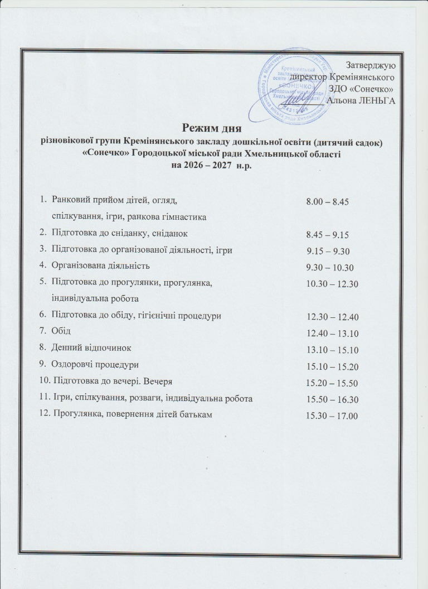
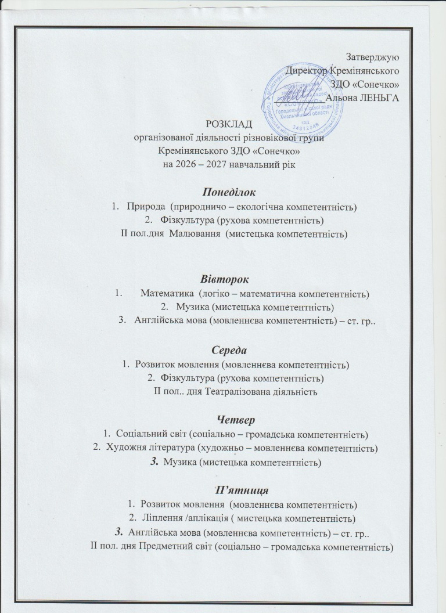

Понеділок
- Природа (природничо-екологічна компетентність)
- Фізкультура (рухова компетентність)
II половина дня: малювання (мистецька компетентність)
Кремінянський заклад дошкільної освіти «Сонечко» · різновікова група
| Час | Режимний момент |
|---|---|
| 08:00–08:45 | Ранковий прийом дітей, огляд, спілкування, ігри, ранкова гімнастика |
| 08:45–09:15 | Підготовка до сніданку, сніданок |
| 09:15–09:30 | Підготовка до організованої діяльності, ігри |
| 09:30–10:30 | Організована діяльність |
| 10:30–12:30 | Підготовка до прогулянки, прогулянка, індивідуальна робота |
| 12:30–12:40 | Підготовка до обіду, гігієнічні процедури |
| 12:40–13:10 | Обід |
| 13:10–15:10 | Денний відпочинок |
| 15:10–15:20 | Оздоровчі процедури |
| 15:20–15:50 | Підготовка до вечері. Вечеря |
| 15:50–16:30 | Ігри, спілкування, розваги, індивідуальна робота |
| 16:30–17:00 | Прогулянка, повернення дітей батькам |

II половина дня: малювання (мистецька компетентність)
II половина дня: театралізована діяльність
II половина дня: предметний світ (соціально-громадська компетентність)
